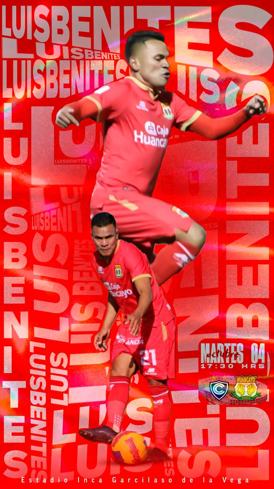
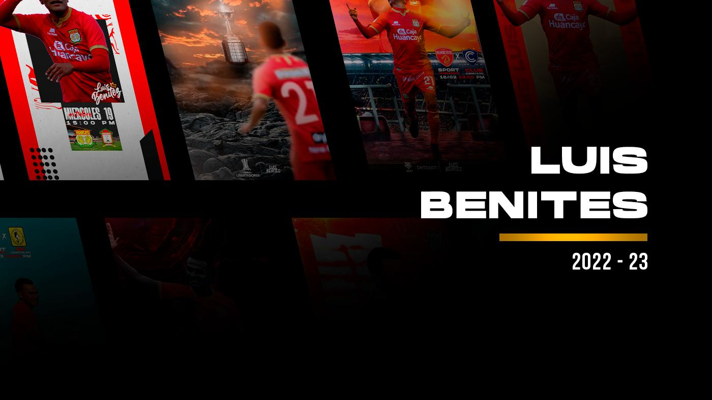

EP 08CH 03 · Diseño deportivo
Luis Benites Matchday'sLuis Benites · Sport Huancayo
- Cliente
- Luis Benites · Sport Huancayo
- Mi rol
- Diseño gráfico
- Temporada
- 2023
- Herramientas
- Photoshop, Illustrator
Matchdays para Luis Benites, el número 21 de Sport Huancayo.
Rojo total: el nombre del jugador repetido como textura, diagonales y montajes con la Copa Libertadores.
Piezas para cada partido de la temporada 2022–23, desde el Estadio Huancayo hasta Libertadores.
15afiches
21dorsal
2022–23temporada
Cuadros · 15



 A continuación · EP 09Qatar 2022Branding y redes
A continuación · EP 09Qatar 2022Branding y redes